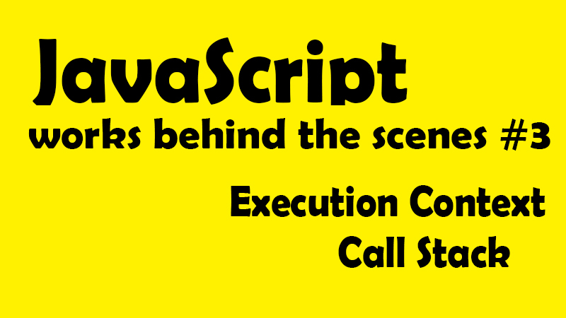

這一系列文章，是在 Udemy 上參與 Jonas Schmedtmann 的課程- The Complete JavaScript Course 2021: From Zero to Expert! 所做的學習筆記，為了深入理解 JavaScript 運作原理，記下那些我未曾注意過的 JavaScript 細節。內容若有任何錯誤，歡迎留言交流指教！
在上篇，我們了解到 JavaScript 的運行環境及及不同程式碼編譯方法的差別後，現在讓我們更深入了解 JavaScript 的執行機制。
首先，在介紹 JavaScript 引擎時，我們知道主要是由兩個元件所組成：
- Call Stack （堆疊棧）
- Memory Heap （內存堆）
而我們知道所謂 Call Stack 是程式碼實際執行的地方，是透過執行環境（Execution Contexts）來執行程式碼。那所以，執行環境到底是什麼、又是如何運作的呢？
讓我們簡單複習一下 JavaScript 的即時編譯過程 ─ JavaScript 原始碼進入引擎 → 解析(Parsing) → 轉為數據結構，組成抽象語法樹(AST) → 編譯(Compilation) → AST 轉換為 machine code 並立即被執行【Execution Contexts】 → program running
現在，假設我們的程式碼已經完成了編譯(Compilation)，進入執行階段 ─ 首先會為頂層程式碼（Top Level Code）創建所謂全域執行環境，也就是會首先執行函式以外的所有程式碼，（因為函式只有在被調用時才會被執行，所以很合理吧？）
*頂層程式碼（Top Level Code）就是最外層，也就是不存在函式中的程式碼。
//全域變數
const name = "emily";
//expression function
const first = () => {
let a = 1;
const b = second();
a = a + b;
return a;
};
//declaration function
function second() {
var c = 2;
return;
}
首先，從這段程式碼中，我們可以看到 name、first 函式、second 函式都屬於頂層程式碼，只是函式需要等候被調用才會執行，所以在這個範例的全域執行環境中，只有 name 正在被執行。
現在，問題繞回來了，所以執行環境到底是什麼啊？
📌 Javascript 的執行環境 (Execution context)？
也被稱為執行上下文、執行背景空間、執行情境。簡單來說，執行環境就是一個對應於當前所需要被執行的部分程式碼而準備的環境，而在這個環境中儲存了所有執行這部份程式碼所需要的一切資訊，例如將區域變數或參數傳入函式中。換言之，也就是 JavaScript 的程式碼永遠只在執行環境中被執行。
白話一點比喻，就像是你去必勝客買一份獨享披薩套餐，你領到餐點時，袋子裡面會有紙巾、叉子、披薩、還有其他醬料等，妳想吃披薩，要透過這個袋子裡的物件才能享用它。而這一整個套餐袋子就是執行環境(Execution Context)，裏頭的叉子、紙巾、醬料則是吃披薩所需要的工具，而披薩就是要執行的程式碼。
所以執行環境可以有很多個囉？是、也不是。
◆ 全域執行環境 (Global Execution Context) 只會有一個！ 全域執行環境也是預設環境（Default Context），無論 Javascript 的項目有多大，都只會有一個全域執行環境，會在進入執行程序時，首先被創建出來，也就是為頂層程式碼所創建第一環境。而在上述的例子中，全域執行環境裡的對象就是 name、first 函式、second 函式（但記得，函式還沒被執行，因為沒被調用。）
◆ 函式執行環境 （Function Execution Context）個別函式專屬的執行環境 記得先前提到，Javascript 永遠都會在 EC 內被執行嗎？也就是說當函式被調用時（invoke）將會各別為該函式建立專屬的執行環境，也就是說有多少個函式要被執行，就有多少個函式執行環境。
而以上所有 EC 的集合，就組成了先前提到的 Call Stack (執行堆疊、堆疊棧)。並同時，當所有以上執行環境都執行完畢後，JavaScript 引擎還是持續保持待機狀態，等待回調函式（callback function）例如滑鼠事件所觸發的函式抵達，而這中間會經過事件回調（Event Loop）的協調機制進行。
大致了解後面的拼圖後，現在我們再回到執行環境 (Execution Context) 中細細拆解。執行程式碼主要分為兩個階段，創建環境與執行階段(creation & execution phase)。
📌 創建執行環境 ( creation phase ) ─ 執行環境裡到底有什麼？
1.變數環境 Variable Environment
let,const,var 變數宣告 Function 聲明 arguments object 參數物件
其中參數物件包含所有傳入該函式的一切參數。而顧名思義，函式執行環境是為了特定函式被執行而建立的，這也就表示當執行結束，這個變數環境也就結束了。
2.建立外部環境(Outer Environment) ─ 範疇鏈 Scope Chain
首先，全域執行環境相當單純，當然就沒有所謂 Outer Environment，因為他本身就是最外部了。所以此項主角肯定是函式執行環境！
函式理所當然可以訪問內部的一切變數（這沒問題），但同時也因為範圍鏈（Scope Chain）的作用而讓函式可以訪問 「外部變數」，也就是創造了外部環境。
範疇鏈的意思就是所有的內部作用區域，都可以訪問他們的外部作用區域，也就是子作用域可以往父層作用域查找所需要的變數。例如 function a 包在 function b 裡，function b 就是 function a 的外部環境。詳細部份會在後續獨立筆記中記錄。
ｂｂｂ ｂａｂ ｂｂｂ
3.特殊變數 this keyword
this 會在執行環境創建時，自然被生成。
*注意細節：箭頭函式 Arrow 沒有 this、也不會有參數物件。但同樣的，函式執行環境會因為範疇鏈的作用，而擁有外部環境，所以雖然箭頭函式本身不具有 this 與參數物件，但他仍可以使用距離最近的父層常規函式的 this 與參數物件。這部份也會在 this 獨立筆記中記錄。
現在，統合以上基礎常識，讓我們回到範例來拆解個別執行環境
const name = "emily";
const first = () => {
let a = 1;
const b = second(7, 9);
a = a + b;
return a;
};
function second() {
var c = 2;
return;
}
const x = first();
以下是創建出來的個別執行環境：全域執行環境(預設創建)、與兩個函式執行環境
| Global | first() | secons() |
|---|---|---|
| name = ’emily’ first = (function) second = (function) x = (未知)*註一 | a = 1 b = (未知) 需執行 second() | c = 2參數 [7,9]*註二 |
註一：嚴格來說，在創建執行環境階段時，數值都是未能得知的，因為需要經過執行才知道，所以在這裡寫下未知的值，其實是有瑕疵的，只是因為要模擬執行環境的建立過程，先不談到執行，所以才先這樣寫下。
註二：這裡參數傳入的是陣列[7,9]，而這在常規函式是允許的，但在箭頭函式則是不允許的。
透過以上的範例可以看到 EC 創建的邏輯，現在讓我們想像，如果有上百個 EC，那 JS 引擎要如何追蹤執行先後順序？而這就是執行堆疊（Call Stack）的任務了！
📌 建立執行環境 ( creation phase )
超白話來說，執行堆疊就是堆疊執行環境的地方，用來追蹤我們目前所在程式碼的位置，所以最上層的執行環境 EC，就是我們目前正在執行的程式碼片段，而當執行完畢，該執行環境就會被從執行堆疊中彈出。
現在讓我們回到範例中，解釋執行堆疊的運作過程。
const name = "emily";
const first = () => {
let a = 1;
const b = second(7, 9);
a = a + b;
return a;
};
function second() {
var c = 2;
return;
}
const x = first();
開始執行（模擬 Call Stack 變化）：
| 建立預設，全域執行環境 | X 須執行 first()，於是堆疊 first EC | first()執行到變數 b，需要執行 second()，故堆疊 second EC | second 執行完彈出，繼續回到 first | first 執行完彈出，X 終於被賦值 |
|---|---|---|---|---|
| second() | ||||
| first() | first() | first() | ||
| Global EC | Global EC | Global EC | Global EC | Global EC |
流程解釋：
- 首先頂層代碼需要首先被執行，所以創建了全域執行環境，並被放入執行堆疊中。
- 當程式碼跑到 X，調用 first 函式，first 專屬的執行環境就會被放入執行堆疊中，開始執行
- 而當 first 函式中執行到第 2 行 const b = second(7,9) 時，需要調用 second 函式，second 專屬的執行環境就會從 first 上方被堆疊上去，而 second 函式開始執行(此時已經沒有需要堆疊的執行環境了)
- second 函式執行完後該執行環境彈出，將值回傳給 first 的 b 變數，此時 first 函式終於回到原本優先執行的位子，並開始執行，執行完後彈出
- 最後 X 得到回傳值，終於被賦值完畢。執行堆疊回到原本只有全域執行環境的狀態。
最後，執行雖然乍看結束了，但目前執行程序仍然會保持在全域執行環境狀態，直到他真正被結束的時候，也就是當我們關閉瀏覽器或視窗時，在那時候就會連全域執行環境都從執行堆疊中彈出。
這樣一路看下來，我們會很清楚知道，執行堆疊對於單執行序的 JavaScript 作用的重點核心，就在於追蹤執行，因為沒有了執行堆疊，我們就無法追蹤現在程式馬執行到哪裡，或應該回到哪裡。
**執行堆疊就像是 JS 的地圖，讓 JS 執行順序不會迷失。**以上就是執行環境、執行堆疊的工作原理。內容若有任何錯誤，歡迎留言交流指教！
接下來，讓我們進一步了解範圍鏈 (Scope Chain)，也就是函式執行環境中，所謂的外部環境到底是什麼意思。
JavaScript 深度旅遊系列
JS#1：JavaScript 運作原理 ─ 深入研究之前，先了解全局 JS#2：JavaScript 引擎與 JavaScript 的運行環境 ─ 什麼？JavaScript 早就不只是直譯式語言了？！ JS#3：JavaScript 的執行原理，Javascript 的執行環境 (Execution context) 與執行堆疊 (Call Stack) JS#4：Javascript 的範疇/作用域（Scope）與範疇鏈 （Scope Chain）變數查找（variable lookup） JS#5：優先認可 變數提升 Hoisting？暫時死區(Temporal Dead Zone) ─ const、let、var 的小祕密